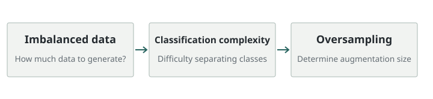

분류 난이도를 반영하는 오버샘플링 크기 산출
분류 복잡도를 활용한 오버 샘플링 크기 산출 알고리즘
소수 클래스 표본을 얼마나 생성할지 분류 복잡도를 활용해 결정하는 2020년 석사학위 연구입니다.
- 문제: 소수 클래스 생성량을 일괄적으로 정하는 방식
- 주제: 클래스 구분 난이도를 생성량 산출에 반영


연구 문제
불균형 데이터에서 소수 클래스 표본을 늘릴 때 생성량을 일괄적으로 정하는 대신, 클래스 구분의 난이도를 반영하는 문제를 다뤘습니다.
접근 방법
확인된 학위논문 제목은 분류 복잡도를 활용한 오버샘플링 크기 산출 알고리즘입니다. 원문을 이 환경에서 열지 못해 세부 실험 조건과 결과는 추가하지 않았습니다. 같은 주제를 다루는 학술지 연구의 방법과 코드는 아래 연결에서 별도로 읽을 수 있습니다.
기여
학위논문 저자입니다. 생성량을 정하는 문제를 석사학위 연구로 정리했습니다. 관련 학술지 연구의 세부 방법을 학위논문과 동일하다고 가정하지 않습니다.
논문 및 코드
RISS 링크기존 자료에 코드 링크가 기재되어 있지 않습니다.